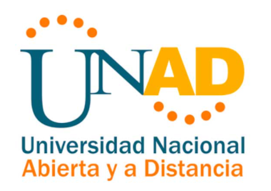

|
Tematicas:
Estructura básica de html5 (etiquetas, atributos y valores) Informacion general del sitio: Estructura básica de html5 (etiquetas, atributos y valores) HTML es un lenguaje de marcas compuesto por un conjunto de elementos que son la base de su estructura. Estos elementos conforman una caja de herramientas que los autores pueden utilizar para dar forma a sus documentos. Por ejemplo, puedes encontrar elementos que insertan párrafos, videos u otros documentos, o elementos que marcan citas, texto importante o los títulos de libros, películas, trabajos y otras obras. Objetivo General: Desarrollar el OVI de diseño de páginas web Objetivos especificos: Diseñar una página web con etiquetas básicas Diseñar, organizar y estructurar una página web basada en el tema escogido Desarrollar la maquetacion de la página web. |
 |